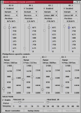

Introduction
Documentation
Platform Neutral
Driver Release Notes
Get Involved
SourceForge
Family
|
|
Note
|

Keep in mind that the hardware version for
which this driver is provided is different
(later) from the one described on the site.
Since the Phidgets are evolving rather
rapidly, the versioning, capabilities
discovery, and support are expected to be a
standard part of this driver. This document
describes the hardware and the driver for
USB PhidgetServo v3.0, for information on
upcoming v4.0 look here.
|
|
Good Things
|
- Reliable as hell.
The manufacturer wants me to make
it fail, I couldn't.
- Simple to use.
Plug in the USB, plug in the
servos, go.
- Versatile. One of
the servos is powered by the USB
bus, so it is possible to start
playing with it right away even
without external power supply.
- Precise. The
actual controller is controlled by
the pulse timings it has to provide
to the servos. Usable range for the
servos is somewhere from 200us to
2100us, which makes the resolution
of 1900 steps. If your servo is
capable of working in a wider pulse
range, you get more steps
available.
- Generic. It is a
USB HID device, enough said.
- Fast. The
bandwidth is limited by the servo
inertia, not by the protocol or
interface.
- Flexible. You can
control properties on per-servo
basis.
- Customizable. To
the best of my understanding, the
manufacturer will provide custom
solutions - different number of
servo outputs per board, different
protocol support and basically
whatever you need.
|
|
Bad Things
|
- As of now, it's still a write-only
device. I don't think it's such a
big deal for this
device - otherwise, it's near
perfect. The only extra ability
that I would like to see is the
hardware level transition support,
but admittedly, that's a lot to ask
;)
|
|
Making it Work
|
You have to get the suitable Java USB
support. Currently, the code is based on jUSB,
which makes it available only on Linux. javax.usb
will probably be used later.
You have to use --with-phidget
configure option to enable the Phidget
support (it is disabled by default), and
--with-jusb=<DIR> option
to specify the root directory of jUSB.
When you are ready to use it, don't forget
to put jusb.jar in your
CLASSPATH and add the directory
where libjusb.so resides to
your LD_LIBRARY_PATH. If you
are using the scripts supplied with the
source tarball (look into
${install_prefix}/bin, it's
already taken care of.
Another thing to take care of is
/proc/bus/usb permissions. You
probably don't want to run this code as
root, so either you have to manually modify
the device permissions so you have
read/write access (you have to do it every
time after the device is plugged in or the
system is rebooted), or use the USB
Permissions Daemon to maintain them for
you. I haven't checked the status of this
with 2.4 kernel, though, it may be fixed
already. Also, see the FAQ for a possible
solution.
|
|
Conclusion
|
Beauty incarnated ;)
|
|

{kind=link}